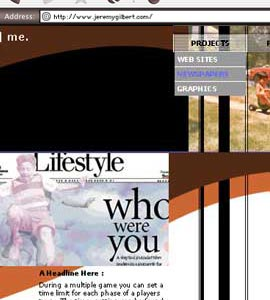

| VERSION 9.4? Still to come: Version 9.3 made some technical changes, but there remain some unresolved design and production issues that will probably finally come in Version 9.4. In making the site quick to load some of the late-70s/early-80s feel was lost and that will be corrected. Also the site was intended as a Flash or HTML site and even now the Flash push is underway. And surely more changes will follow... |  |
|
| VERSION 9.4? : 9.01 | BACK/END | ||